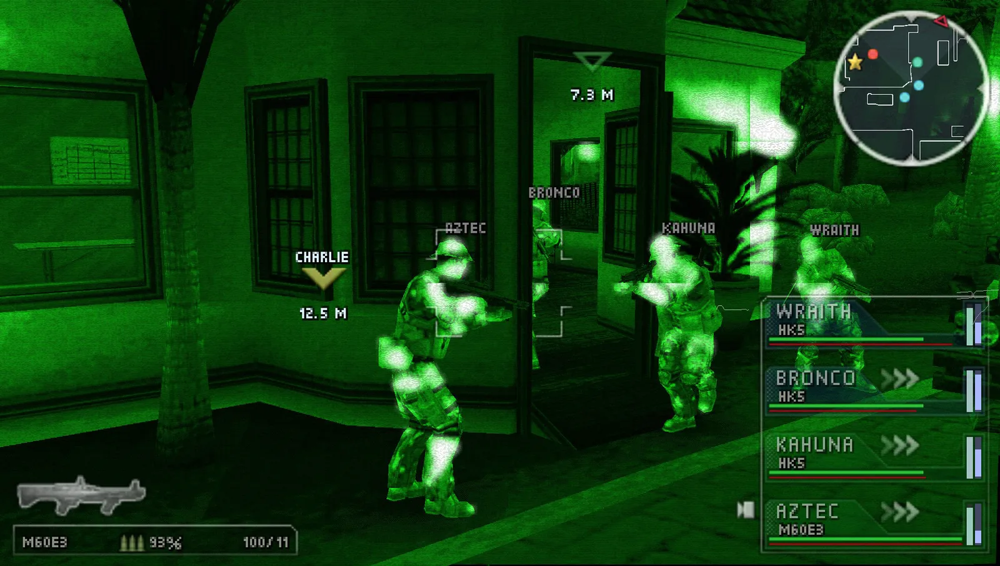
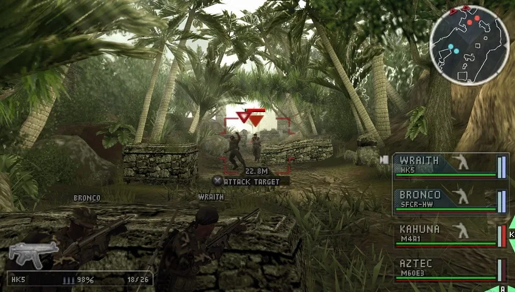

01What I owned
- Multiple level scenarios, each with assault and stealth ways through
- Scripted semi-linear missions with multiple strategies
- Designed strategic scenarios to be implemented in game
- Designed different enemy types to keep players on their toes
02How it played
Tactical Strike was a real-time tactics game where you controlled a team of 4 Navy SEALs through various levels.

Pictured here is one of the levels I worked on, showing some of the attack options, which you could either execute immediately or queue up to have all your SEALs perform orders all at once.
Sony released the game for PSP on November 6, 2007, with nine main non-linear missions and 18 instant action missions. The game was nominated in the Strategy category of the 2009 British Academy Video Games Awards.
03Level scenarios
The design of levels required multiple assault and stealth ways to navigate through them, allowing players to discover their own preferred ways to play. I was responsible for multiple level scenarios and discovering creative ways to use different tactics.

04Enemy types
In addition I was responsible for designing different enemy types to keep players on their toes. Some enemies would charge, some would hide and melee, some would move into a preferred range moving only from cover point to cover point, while others would look to always flank the player.

I believe other enemy types were variations of these base types.
05What I learned
Across my years on SOCOM, a big part of my work was using level design tools to build out encounter spaces that supported multiple approaches, giving players genuine agency rather than forcing a single solution. On the SOCOM series, I designed core combat mechanics and AI that pushed players to vary their strategies.